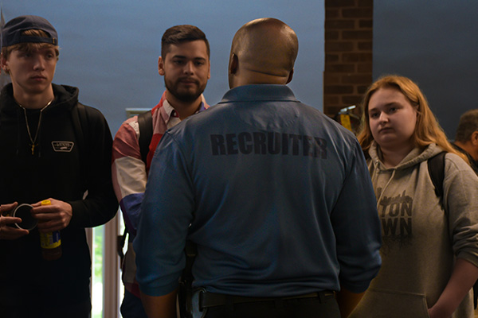
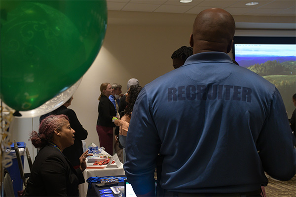
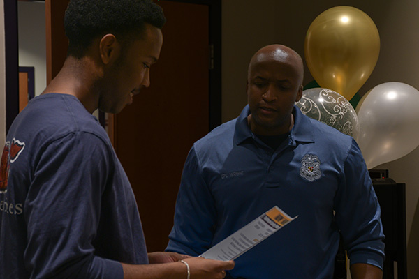
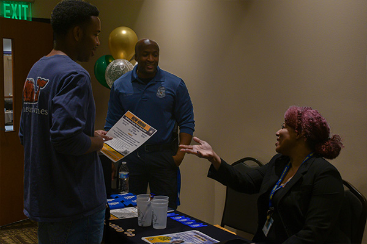

Baltimore County Police Seek Out Applicants as Mass Exodus Continues
"Be the change you want to see," says Cpl. Robbie Wright to students passing through his booth at a recent Community College of Baltimore County Criminal Justice career fair.
Cpl. Wright attends careers fairs and recruting events throughout the state of Maryland to help improve community relations with police while seeking out new recruits to help support a declining police force in Balitmore County.
On Thursday, April 17, Cpl. Wright attended a criminal justice career fair at CCBC in Essex, MD, followed by a Law Day career fair this evening at Stevenson University.
1 / 6

Robbie Wright, Balitmore County Police Cpl., speaks with students at CCBC Criminal Justice Career Fair
2 / 6
Robbie Wright speaks with Townson University student, Jason Shank.
3 / 6
Robbie Wright speaks with student at CCBC Criminal Justice Career Fair.
4 / 6

Robbie Wright attends Law Day at Stevenson University.
5 / 6

Devlin Green Jr. speaks with Robbie Wright at Stevenson University.
6 / 6

Devlin Green Jr. speaks with Robbie Wright and Retired Special Investigator Caprice Smith.
❮
❯